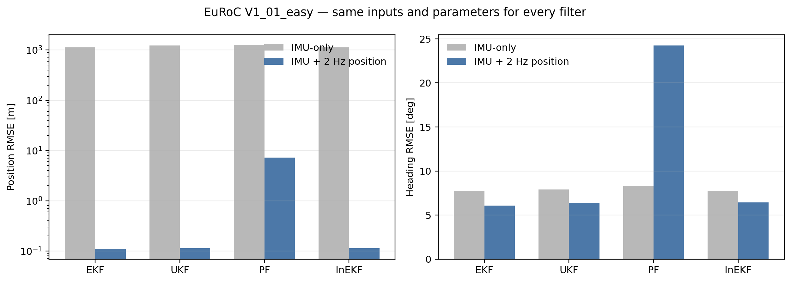
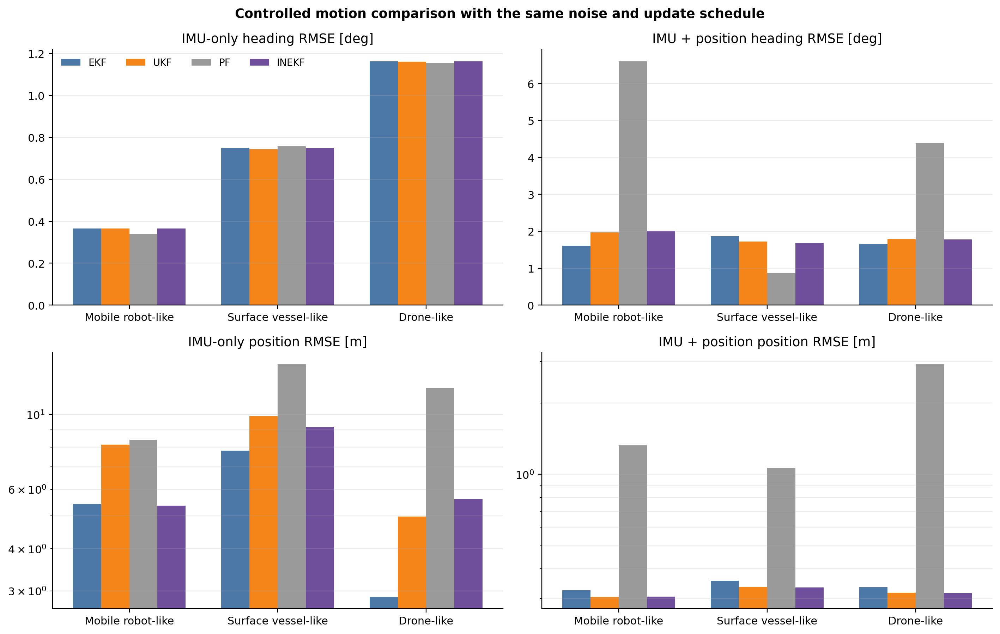
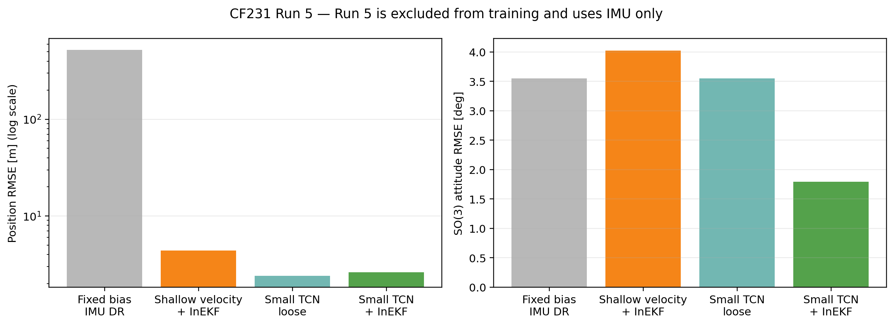
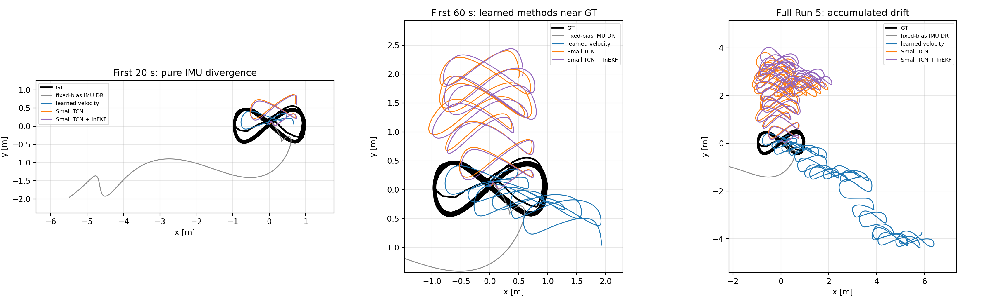

공통 필터
모든 필터에 같은 IMU, 초기값, 위치 측정과 평가식을 사용합니다.
IMU 기반 상태추정 연구
같은 상태와 입력을 사용해 EKF, UKF, PF, ESKF, InEKF를 비교하고, IMU-only dead reckoning과 위치 update, Small TCN 속도 추정을 실험한 코드입니다.
2026년 6월 22일 이후 진행한 상태추정 연구를 한 저장소에서 실행할 수 있도록 정리했습니다. IMU bias를 한 번 정해 고정했을 때의 dead reckoning, 위치 측정을 넣었을 때의 필터 차이, 회전량에 따른 InEKF 성능, 이전 비행으로 학습한 속도 측정을 차례로 확인했습니다.
모든 필터에 같은 IMU, 초기값, 위치 측정과 평가식을 사용합니다.
EuRoC에서 위치 측정 유무에 따른 위치와 roll, pitch, heading 오차를 비교합니다.
Runs 3/4/9/10으로 학습하고 Run 5에서는 시작 상태와 IMU만 사용합니다.
[ax, ay, az, gx, gy, gz][px, py, pz, roll, pitch, yaw]상태: {R, v, p, bg, ba} → 오차상태: [δθ, δv, δp, δbg, δba] ∈ R15
| 필터 | 자세와 불확실성 표현 | 현재 용도 |
|---|---|---|
| EKF | Quaternion을 포함한 16차원 상태 | 기본 비교 방법 |
| UKF | Quaternion과 15차원 local sigma points | 비선형 전파 비교 |
| PF | Quaternion particle과 위치 likelihood | 비가우시안 비교 |
| ESKF | Rotation matrix와 15차원 error injection | 현재 발산 원인 확인 중 |
| InEKF | SE₂(3) 상태와 invariant error | 주요 비교 필터 |
from state_estimation import create_filter
f = create_filter("inekf", mode="fused")
f.predict([ax, ay, az, gx, gy, gz], dt)
f.measurement_update([gps_x, gps_y, gps_z])
pose = f.estimate_pose()
1,130.12 m
InEKF IMU-only 위치 RMSE
0.114 m
InEKF + 2 Hz 위치 RMSE
IMU-only에서는 EKF와 InEKF의 궤적이 거의 같았고 모두 발산했습니다. 2 Hz 위치 update에서는 EKF 0.110 m, InEKF 0.114 m였습니다. 실행시간은 InEKF 8.51초, EKF 15.90초였습니다. 위치 측정은 실제 GPS가 아니라 GT 위치에 noise를 추가해 만든 값입니다.

noise, bias, 실험 시간과 1 Hz 위치 update는 같게 두고 회전 운동만 세 단계로 바꿨습니다. 회전량이 커질수록 InEKF가 EKF보다 계속 좋아지지는 않았습니다. 이 관계는 실제 세 플랫폼에서 같은 위치 측정 조건을 적용해 더 확인해야 합니다.


| 방법 | 위치 RMSE | SO(3) RMSE | 결과 |
|---|---|---|---|
| 고정 bias IMU 적분 | 522.2007 m | 3.5535° | 위치 발산 |
| Small TCN 속도 적분 | 2.3955 m | 3.5535° | 가장 낮은 위치 RMSE |
| Small TCN + InEKF | 2.6131 m | 1.7964° | 자세 오차 감소 |
Run 5 bias는 처음 2.63초의 정지 구간에서 한 번 계산해 고정했습니다. Run 5를 평가할 때는 시작 상태와 IMU만 사용하지만, Small TCN 학습에는 다른 run의 GT velocity가 필요합니다. 따라서 학습 없는 순수 IMU 적분과는 구분해야 합니다.
git clone https://github.com/INHA-Artemis/inertial-state-estimation-benchmark.git
cd inertial-state-estimation-benchmark
python3 -m venv .venv
source .venv/bin/activate
pip install -e ".[test,learned]"
python examples/basic_filter_loop.py
state-estimation-run-all --config config/euroc.yaml --filters ekf ukf pf inekf
state-estimation-cf231-tcn --dataset data/cf231_leave_one_out/csv
python -m pytest -q데이터 파일의 위치와 필요한 파일명은 저장소의 DATASETS.md에 적어 두었습니다.